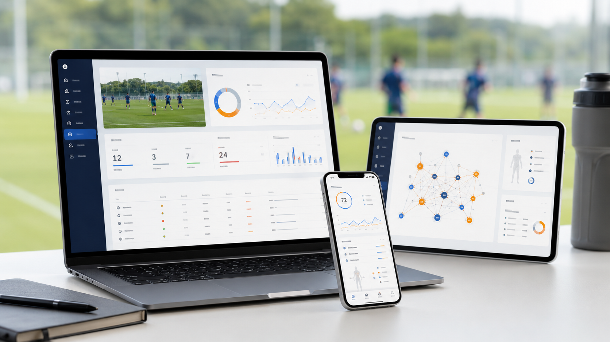

傷害リスク予測
選手ごとに傷害の発生リスクを予測し、誰に注意すべきか・何がリスクに寄与しているか・練習負荷をどう調整するかまでを示します。
約70%
高リスクと判定した選手のうち、
実際に傷害が発生した割合
※筑波大学蹴球部 2022–2025年データでの検証値。対象は筋肉系・非接触靱帯系・オーバーユース系。すべての傷害を捉えられるわけではなく、発生した傷害のうち事前に捉えられたのは約20%です。チーム・データ環境により結果は異なります。
現場に散らばるデータをつなぎ、一人ひとり・チームごとの意思決定へ。
日々の記録を、現場で活きる判断材料に変えていきます。
About
Odonataは、筑波大学の博士課程で研究を続けるメンバーと、サッカーの現場に立ってきたメンバーが集まって立ち上げたチームです。
スポーツの現場では、コンディション・GPS・試合・メディカル・育成計画といった記録が日々生まれています。けれどそれらは別々の場所に置かれ、つながらないまま積み上がっていくことがほとんどです。
私たちは、その散らばった記録をつなぎ直し、ひとつの指標を見ているだけでは分からなかった発見を見出す分析を行っています。そして、その分析結果を現場スタッフが日々の判断に使えるWebアプリとしても提供しています。
研究・分析・実装のすべてを、同じチームの中で行っています。
Service
「データ分析・伴走支援」と「データプラットフォーム」の2つを提供しています。
すでにチームが持っている過去データから始めます。Excel・GPS・試合・コンディションの記録をお預かりして分析し、現場で使える示唆として返します。

日々の入力から蓄積・一元管理・推移の確認・分析までを、ひとつの環境で行います。現場スタッフが毎日使うWebアプリです。
単一の指標では見えない状態を、選手ごとに読み解きます。
選手ごとに傷害の発生リスクを予測し、誰に注意すべきか・何がリスクに寄与しているか・練習負荷をどう調整するかまでを示します。
高リスクと判定した選手のうち、
実際に傷害が発生した割合
※筑波大学蹴球部 2022–2025年データでの検証値。対象は筋肉系・非接触靱帯系・オーバーユース系。すべての傷害を捉えられるわけではなく、発生した傷害のうち事前に捉えられたのは約20%です。チーム・データ環境により結果は異なります。
指標どうしの関係・向き・強さ・時間差を可視化し、単一のグラフでは見えなかった構造を読み解きます。その選手の状態の中心にある指標が分かります。
コンディション・GPS・トレーニング・試合・IDPを横断し、「なぜこの選手はこの期間よかったのか」を問い直せます。例えば負荷と疲労が重なった週は、試合中の球際の勝率が平均約16pt低下しました。
※筑波大学蹴球部 GPS約5.6万日分＋日次コンディションの階層ベイズモデルによる推定値。低下の幅は選手により異なります。
選手の傷害やパフォーマンスは、GPSだけ、疲労だけ、試合スタッツだけでは決まりません。単独では異常のない要因も、重なり方次第で危険域に達します。
だからOdonataは、指標を1つずつ見るのではなく、指標どうしの関係性を分析の単位に置いています。
つなぐデータに、決まった型はありません。チームがすでに持っている記録は、どれも分析の入口になります。
新しい機器の導入は不要です。紙やExcelで記録しているものからでも開始できます。
分析して終わりにせず、現場で使われ、データが貯まり、また新しい発見が生まれる。その循環をつくるためです。
使うほど、精度が上がる。
使うほど、発見が増える。
2022〜2025年の主観コンディション・GPS・スケジュール・傷害履歴を統合し、200以上の観点から特徴量を生成。傷害発生時との類似性を学習させた個別傷害リスク予測モデルを開発しました。
大学トップレベルの競技環境で、GPS・コンディション・メディカル記録が別々に保存され横断して読み解けなかった状態から着手。分析を研究室に閉じず、選手・スタッフが毎日使えるWebアプリとして現場に実装しました。
※分析結果・モデル精度はデータ量・データ品質・対象チームの環境により異なります。

筑波大学 博士課程での研究（認知心理学・脳科学・臨床心理）
筑波大学蹴球部での選手経験・指導経験
理学療法士資格を持つエンジニアによる自社開発
認知心理学・脳科学の手法でスポーツと学習を研究。蹴球部での選手・指導者経験を持つ。
理学療法士資格を持つエンジニア。データ基盤とネットワーク解析を設計・実装。
臨床心理士・公認心理師。心理ネットワークアプローチをコンディション分析に応用。
いま現場にあるデータの状況を伺います。GPS・コンディション・試合記録のほか、紙やExcelの記録でも構いません。
限定した範囲で運用し、入力項目・UI・分析モデルを調整します。
この往復を、納得できるまで繰り返します。
過去データの取り込みを経て、チーム全体の運用へ広げていきます。